Human Ecology - Basic Concepts for Sustainable Development
Author: Gerald G. Marten
Publisher: Earthscan Publications
Publication Date: November 2001, 256 pp.
Paperback ISBN: 1853837148
Hardback SBN: 185383713X
Chapter 8 - Ecosystem Services
- Material cycling and energy flow
- Ecosystem services
- The relation between ecosystem services and intensity of use
- The fallacy that economic supply and demand protect natural resources from overexploitation
- Things to think about
We all depend upon ecosystems for the food and natural resources that sustain our lives. Most of the resources are renewable because ecosystems supply them on a continual basis. People use the resources and return them to the ecosystem as waste such as sewage, rubbish or industrial effluent. Ecosystems renew the resources by processing the waste so it is once again available for use by people (see Figure 8.1). A continuous supply of energy from the sun is required to do this. Solar energy fuels the cyclic movement of materials through the ecosystem providing all animals, including humans, a supply of renewable natural resources and a repository for their wastes.
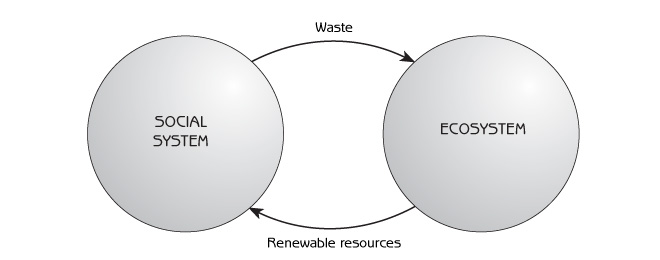
The provision of renewable natural resources is a major part of ecosystem services. These services depend not only on sunlight but also on a healthy biological community to pass materials and energy to humans in a form they can use. The ability of ecosystems to provide these services derives from two important emergent properties: material cycling and energy flow. As we shall see, materials cycle, but energy does not cycle because energy passes out of the ecosystem as it flows through it.
The human population explosion and increasing levels of consumption with economic development have recently generated increasing demands on ecosystems for these services. When people try to take too much from ecosystems - when they overexploit ecosystem services - they get less because they damage the ecosystem’s capacity to provide the services. If people persist with excessive demands, the ecosystem can be changed so much that the services disappear entirely. The loss of services can be irreversible. As we saw with overfishing and desertification of grasslands through overgrazing in Chapter 6, overexploitation can switch an ecosystem to a new stability domain so that the service does not return even when demand is reduced.
Material Cycling and Energy Flow
Material cycling and energy flow are emergent properties of ecosystems that result from ecosystem production and consumption (see Figure 8.2).
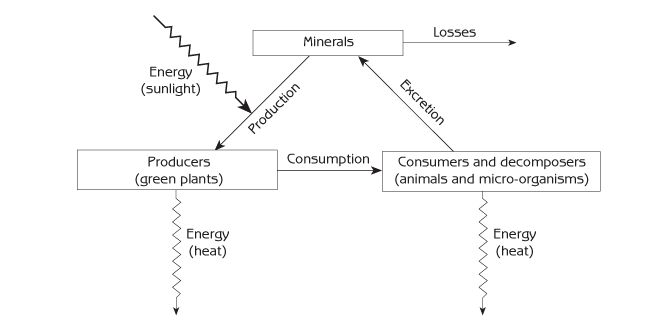
Production
Using energy from sunlight, photosynthesis joins carbon from carbon dioxide into the carbon chains that form the living tissues of plants. Biological production (also called net primary production) is the growth of the plants. In addition to providing the structural material for all living organisms, carbon chains store a large quantity of energy that they can use for metabolic ‘work’.
Consumption
Animals and microorganisms eat plants, animals or microorganisms and use the carbon chains in their food as:
- building blocks for their own growth;
- a source of energy for metabolic activities (physiological processes that living organisms use to put carbon-chain building blocks together to make their bodies).
To get energy from carbon chains, the carbon chains are broken apart and released to the atmosphere as carbon dioxide. This is known as respiration.
Material cycling
The movement of materials in an ecosystem is material cycling, also called mineral cycling or nutrient cycling because elements such as nitrogen, phosphorous and potassium are minerals that provide nutrition for plants. Materials move through ecosystems in a cycle of production and consumption. The most important elements are carbon, hydrogen and oxygen which are required for photosynthesis, and nitrogen, phosphorous, sulphur, calcium and magnesium which are required for the construction of proteins and other structural compounds in the bodies of living organisms. Potassium and some minor elements (iron, copper, boron, zinc, manganese) are also necessary for plant growth. These elements are transferred from soil and water to green plants when the plants grow (ie, production). They are returned to soil and water whenever carbon chains are broken apart during consumption.
Animals and some microorganisms are consumers. Different species have different ecological roles such as:
- herbivores (animals that eat plants);
- predators (animals that kill and eat other animals);
- scavengers (animals that eat dead plants or animals);
- parasites (animals that live inside plants or animals which act as their hosts);
- pathogens (microorganisms that live inside plants or animals and cause disease).
Consumers use the carbon chains in their food as building blocks for their bodies. When consumers derive more mineral nutrients from their food than they need for their own bodies, they release the extra minerals into their environment. For example, nitrogen is excreted as ammonia or urea. The minerals return to the soil, where they serve as nutrients for plants.
Most microorganisms are decomposers, which consume the bodies of dead plants, animals and other microorganisms to obtain the carbon chain building blocks that they need for their growth. They release any surplus mineral nutrients from their food into the environment, where the mineral nutrients are available for use by plants. The basic function of decomposers in the ecosystem is in many ways similar to consumers.
The laws of thermodynamics
Energy has six basic forms:
- Radiation (sunlight, radio waves, X-rays, infrared radiation).
- Chemical (such as batteries, carbon chains).
- Mechanical (movement).
- Electrical (movement of electrons).
- Nuclear (energy inside atoms).
- Heat (movement of atoms and molecules).
The first law of thermodynamics concerns the conservation of energy. It states that energy can never be created or destroyed, but it can be transformed from one form into another. This means there is always the same amount of energy before and after transformation of energy from one form to another.
The second law of thermodynamics states that whenever energy is converted from one form to another, some of the energy becomes low-level heat. This means that conversion of energy from one form to another is never 100 per cent efficient (see Figure 8.3). Some of the energy is lost as heat. The ‘lost’ energy is still energy but is no longer high-level energy that can be used for work, such as moving things or fuelling metabolic processes in plants and animals.
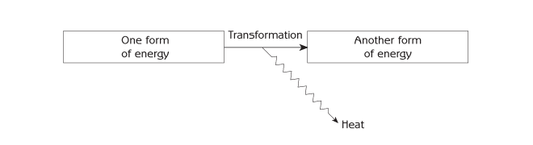
An important consequence of the second law of thermodynamics is that all systems in the universe, both physical and biological, need energy input to continue functioning. The functioning of physical and biological systems involves numerous energy transformations. Every time energy is transformed from one form to another for physical or metabolic ‘work’, some of the energy is converted to low-level heat, which can no longer be used. In other words, the system loses useful (high-level) energy as it uses it. If there is no energy input to a system, all of the system’s useful energy is eventually lost as low-level heat, and no high-level energy remains for the system to continue functioning. The main energy input to ecosystems is sunlight. The biological community uses the energy for physical work such as the movement of animals and microorganisms, metabolic work and other work that ecosystems require to continue organizing themselves and to function properly (see Figure 8.4).
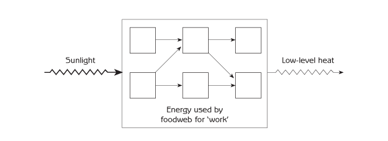
A metaphor for material cycling and energy flow in ecosystems
A pot of water on a stove illustrates how materials and energy move through an ecosystem (see Figure 8.5). A fire heats the water at the bottom of the pot, changing it to a higher energy level (hot objects have a higher energy level than cold objects). Because warmer water is lighter in weight than colder water, the heated water rises to the top of the pot. While the heated water is at the top of the pot, it becomes cooler as heat energy moves from the heated water to the cooler air above. After losing heat, the water (which is now cooler and heavier) sinks to the bottom of the pot to replace newly heated water that is rising. The result is water circulation - a physical cycle. The fire is the energy input to the system, and the heat loss from the water at the top of the pot is the energy output of the system.
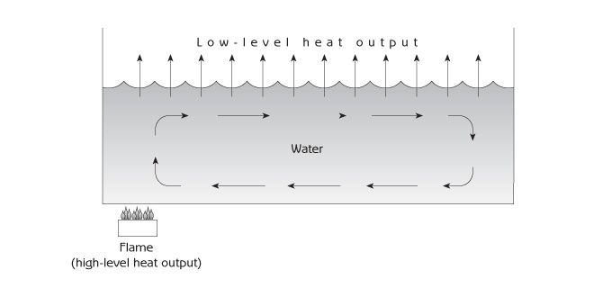
Because of the energy input (the fire), the water in the pot is self-organizing. It makes its own structure (different temperatures in different parts of the pot). The water in the pot forms a material cycle, but the energy does not cycle. Energy enters the pot from the fire, moves from the bottom of the pot to the top with the heated water, and leaves the pot as low-level heat. This is known as energy flow. If the fire (the energy input) is turned off, the water in the pot stops cycling, energy stops flowing and the water loses its self-organizing structure.
Energy flow in ecosystems
Like the pot of water, the movement of materials in ecosystems is cyclic, and the movement of energy is not cyclic. Energy enters ecosystems as sunlight (like the fire under the pot). The energy is bound by photosynthesis into carbon chains that green plants use for the growth of their bodies. Carbon chains are similar to the hot water in the pot and contain a high level of energy. Plants break down some of the carbon chains in their body (respiration) to get the energy they need for their own metabolism, and some of the energy is released into the environment as heat. The carbon chains that are left (ie, photosynthesis minus plant respiration) are the carbon chains that plants have for growth. The growth of all the plants in an ecosystem is the ecosystem’s net primary production. Primary production is the source of living material and energy (in the form of carbon chains) for ecosystems.
When consumers (animals and microorganisms) use the carbon chains in their food as building blocks for their bodies, they break down some of the carbon chains to release energy for their metabolic needs. This is respiration, and the energy is used for movement - firstly, movement and reorganization of molecules required for growth and metabolic activities essential to survival; secondly, movement of the entire body. After consumers use the energy from respiration, the energy is released to the environment as heat. As one consumer eats another, there is a flow of high-level energy in carbon chains along a food chain through the food web, and there is a loss of energy as heat when the energy is used at each step for metabolic work (respiration). The percentage of energy at one step of a food chain that is available for consumption by the next step is called food chain efficiency. It is calculated as the energy in the food minus the energy used for respiration. It is typically 10 per cent to 50 per cent. Figure 8.6 shows energy flow from one step of a food chain to another.
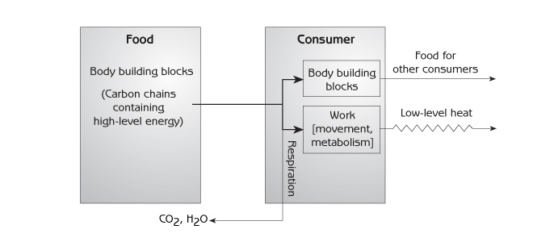
As they pass through the food web, carbon chains are broken apart bit by bit for energy until they disappear (see Figure 8.7). When consumers respire carbon dioxide and water and excrete other minerals, such as nitrogen, phosphorous, potassium, magnesium and calcium, these minerals are in the form of plant nutrients, exactly the same as when they entered the biological system. They cycle back to plants. Waste from consumers is food for producers. Energy does not cycle back to plants because energy leaves consumers as low-level heat, which plants cannot use; plants can only use sunlight. On a global scale, the sunlight energy that reaches the Earth is eventually converted to low-level heat, leaving the Earth as infrared radiation (see Figure 8.8).
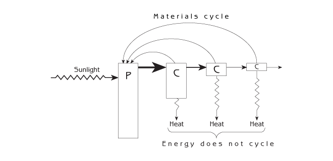
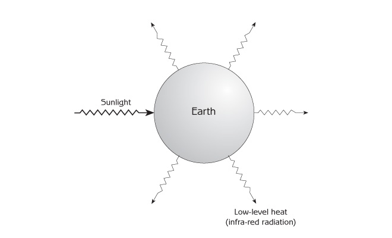
In agricultural ecosystems, the number of steps in a food chain that leads to people determines how efficiently the primary production of an agricultural ecosystem is channelled to people. Longer food chains mean less food for people. People obtain more food from the same amount of land when they eat plants.
Sunlight is the only major source of energy input to most natural ecosystems, but human energy inputs are important in agricultural and urban ecosystems. Human energy inputs include human labour, animal labour, mechanized energy inputs, such as tractors and other machines, and the energy contents of materials that people bring into ecosystems. Human energy inputs do not become part of the biological energy flow as sunlight does. Human energy inputs are used to organize ecosystems by changing the biological community and adding man-made physical structures. This in turn affects biological energy flows and material cycling by changing primary production and the food web. With modern agriculture, most of the human energy inputs come from petroleum energy.
Ecosystem Services
Figure 8.9 shows how dependent humans are on the functioning of other parts of the ecosystem. Humans are consumers - just one among all the consumers in an ecosystem. Almost everything that people require for survival comes from material cycling and energy flow as two essential services:
- Supply of renewable resources (plants, animals and microorganisms as food; plant and animal fibres for clothing; timber for construction; and water).
- Absorption of pollution and wastes (consumption and decomposition of organic wastes by bacteria, removal of mineral nutrients from water by aquatic plants, dilution of toxic materials by rivers, oceans and the atmosphere).
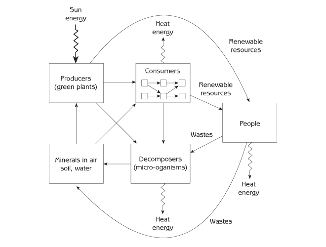
The Relation Between Ecosystem Services and Intensity of Use
An important emergent property of ecosystems is that ecosystem services decline if they are used so intensively that the ecosystem’s ability to provide services is damaged (see Figure 8.10).
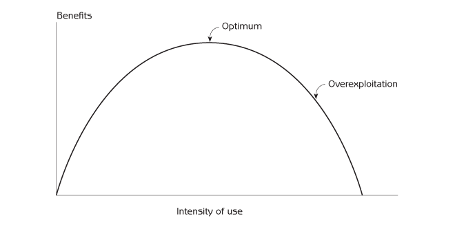
Using fisheries as an example, if fishing intensity (the number of nets or hooks in the water) in a particular aquatic ecosystem is minimal, greater fishing intensity leads to a higher fish catch. However, if fishing intensity is greater than the optimum, then more fishing leads to a lower fish catch. This is because the fish population is depleted to such an extent that there are insufficient adult fish to produce an adequate number of new fish for the next generation to sustain the same fish catch. Overexploitation has depleted the ecosystem’s natural capital.
The same thing happens with forests, pastures and agriculture. When logging is not very frequent, more logging yields more wood; when there are not many animals grazing on a pasture, more animals yield more production of meat or milk; and more intensive agriculture generates higher yields if the agriculture is not already too intense. However, if trees are felled too often, forests are unable to mature; as a result, the quantity of wood extracted soon becomes unsustainable. If pasture is grazed too heavily, grasses become less abundant. The food supply for grazing animals is therefore reduced, and production yields (ie, growth of the animals) are less. Excessive use of chemical fertilizers or pesticides to increase crop production can pollute the soil and reduce production. Large quantities of fertilizers or pesticides can be toxic to plants; pesticides can also kill soil animals and microorganisms that maintain soil fertility. The exploitation of natural areas for recreation can damage natural ecosystems and impact on the visual beauty that draws people to these areas in the first place.
An emergent property of ecosystems: ecosystem services may disappear if the intensity of use is excessive
This typically happens when human-induced succession changes an ecosystem from a stability domain that is ‘okay’ to one that is ‘not okay’ (see Figure 6.8). Fisheries succession - when commercially valuable fish disappear because fishermen focus their fishing on particular species of fish - is an example (see Figure 6.7). The ecosystem switches from providing commercially valuable fish to not providing them. Desertification due to overgrazing is another example (see Figure 6.6). The relation between intensity of use and benefits can change from that in Figure 8.10 to the relation in Figure 8.11.
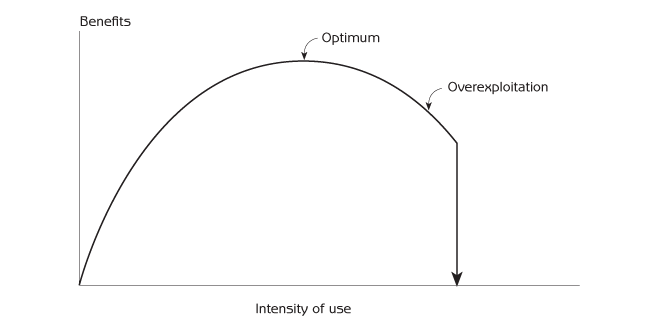
Another example is the intensification of food production by extending inappropriate agriculture to hillsides - a common practice in the developing world today. When crops are grown year after year on hillsides, soil erosion can remove all of the topsoil, leaving the land unsuitable for further cultivation. Similarly, inappropriate intensification of food production by means of irrigation can render the land unsuitable for food production. The use of irrigation in arid regions where there is insufficient water can lead to salinization that makes the soil toxic for crops. When irrigation water evaporates from the soil, it leaves behind minerals that can accumulate to concentrations that are toxic for crops unless the field is flushed with extra water to carry away the salts. If extra water is not available, the salts accumulate until crop yields are so low that agricultural production is not worth the effort. Large areas of land in southern Asia that were put into agricultural production as part of the Green Revolution several decades ago are now waste lands due to salinization.
The same thing happens with absorption of wastes by rivers, lakes, the ocean and other aquatic ecosystems. Dumping too much waste into an aquatic ecosystem can reduce its capacity to absorb wastes. Ecosystems absorb organic wastes, for example, when decomposers such as bacteria use the wastes as food. The decomposers use oxygen from the water for respiration, and they release partly broken-up carbon chains into the water as by-products of decomposition. Increasing amounts of waste that must be absorbed means more respiration and more by-products. If too much organic waste is dumped into the water, decomposers use all of the oxygen in the water, and by-products released by the decomposers reach toxic concentrations. The chemical condition of the water changes so much that even the waste-consuming decomposers can no longer survive. The waste-consuming decomposers are replaced by other kinds of bacteria, which do not purify the water, and the natural capacity of the aquatic ecosystem to absorb organic wastes is reduced.
Before the Industrial Revolution, when the human population was relatively small and demands on ecosystem services were correspondingly minimal, the use of ecosystem services was in the ‘ascending’ portion of the curve in Figure 8.11. Now, with overpopulation and a massive worldwide industrial machine that consumes large quantities of natural resources, human use of ecosystem services is increasingly in the ‘descending’ overexploitation portion of the curve.
How do we know what intensity of use is best? How can we know if we are overexploiting ecosystem services? Our social system has not developed effective means of answering this question because overexploitation was not a major problem in the past, when the human population was smaller and people did not place heavy demands on ecosystems. A practical approach to avoiding overexploitation is to increase intensity of resource use in relatively small increments, watching carefully how the benefits change as intensity of use increases. Relevant parts of the social system and ecosystem can be monitored simultaneously for signs of unintended consequences. Intensity of use is okay if benefits increase when intensity increases (see Figure 8.10). A decrease in benefits indicates overexploitation.
Simple as this approach may be in principle, its implementation is far from simple in practice. Operational procedures for evaluating ecosystem services are sometimes not at all obvious. Data collection and tabulation can be expensive, and the results may be less than conclusive. Human activities include so many different actions that affect ecosystems, and ecosystem responses can involve so many services, it can be virtually impossible to sort out specific causes and effects. Moreover, the response of ecosystem services to changes in human activities can take years or decades, a time frame that in many instances does not fit the pace of change in the human activities. When in doubt about overexploitation, it is prudent to follow the precautionary principle that is described in Chapter 10.
The Fallacy that Economic Supply and Demand Protect Natural Resources from Overexploitation
Some people assume that the invisible hand of supply and demand protects renewable resources from overexploitation (see Figure 8.12). This belief is based on the idea that excessive use of a resource is prevented by higher prices when the resource becomes scarce. The protection comes from a negative feedback loop. For example, if too many fish are caught, fish become scarce, the price of fish increases, there is less demand for fish, fewer fish are caught, and the fish population increases again.
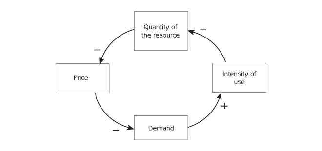
The negative feedback loop for supply and demand is real, but the belief that market forces protect renewable resources from overexploitation is based on a simplistic view of ecosystems that ignores irreversible human-induced successions. There can be a switch from one stability domain to another (see Figure 6.6). When commercially valuable fish are replaced by ‘trash fish’ because of overfishing, the valuable fish may not return even if fishing is stopped completely.
Forests provide another example. If trees are cut too frequently, the biological community may change from forest to grass or shrub dominated ecosystems. If forests are clear-cut over a large area, they may not regenerate at all because there are no seeds from mature trees to generate new trees. In addition, without trees to provide leaf litter, the soil can lose the cover of leaves that protects it from erosion, and erosion can reduce soil fertility to such an extent that trees can no longer survive. There are social as well as ecological reasons for irreversible loss of forest after excessive logging. The same roads that logging companies build to remove trees from a developing world forest can also provide a way for land-hungry people to reach recently logged areas in order to plant crops. The forest never regenerates if people continue to use the land for farming.
Things to Think About
- List some of the most important plant, animal and microorganism products that you use. (They correspond to arrows from producers, consumers and decomposers to humans in Figure 8.9.) What kinds of ecosystems do the different products come from? Where are those ecosystems located? In the case of animal and microorganism products, how many steps are there in the food chain leading to a product? What significant products or other services come from an ecosystem as a whole?
- Think of some important renewable resources that you consume directly or indirectly. Do you think the intensity of use of those resources is optimal in the sense of Figure 8.10? Less than the optimum? More than the optimum (ie, overexploitation)? For resources that seem to be overexploited, how can use be reduced? What are significant practical or social obstacles to actually reducing the use? Has overexploitation led to irreversible changes in some of the resources?
- Think of some non-renewable resources. Are they being used in a way that will allow them to last for as long as people need them? For resources that are being rapidly depleted, what can be done to reduce the rate of consumption? What are significant obstacles to actually reducing consumption?
- People make demands on ecosystems to provide services that improve the quality of their lives. Because the capacity of ecosystems to satisfy human demands is limited, we need to be aware of what we really want from life and what we really need from ecosystems. List the things that are most important for the quality of your life. How much of your list is about consumer goods? What are the implications of your list for demands on ecosystems?